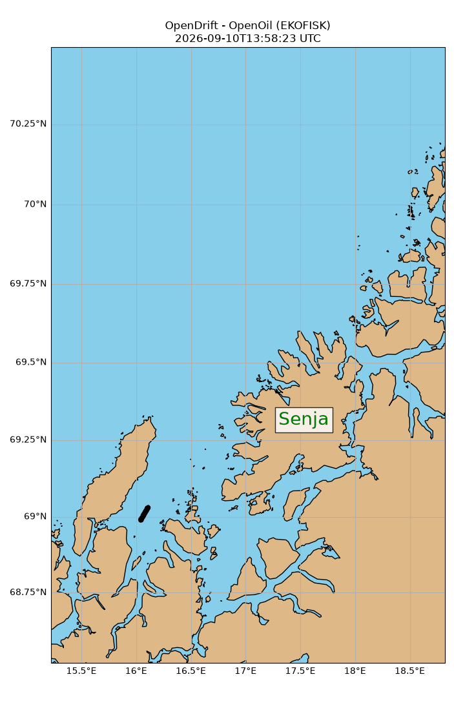
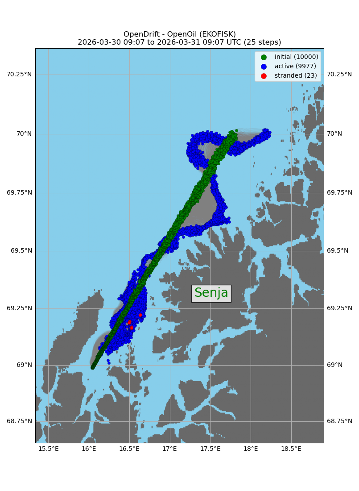

Note
Go to the end to download the full example code.
Cone seeding
from datetime import datetime, timedelta
from opendrift.readers import reader_netCDF_CF_generic
from opendrift.models.openoil import OpenOil
o = OpenOil(loglevel=20) # Set loglevel to 0 for debug information
09:07:33 INFO opendrift:568: OpenDriftSimulation initialised (version 1.14.9 / v1.14.9-13-g8ecfc8e)
Using live data from Thredds
o.add_readers_from_list([
'https://thredds.met.no/thredds/dodsC/fou-hi/norkystv3_800m_m00_be'])
Adjusting some configuration
o.set_config('processes:dispersion', True)
o.set_config('processes:evaporation', False)
o.set_config('processes:emulsification', True)
Seed elements along cone, e.g. ship track with increasing uncertainty in position
latstart = 68.988911
lonstart = 16.040701
latend = 69.991446
lonend = 17.760061
time = [datetime.utcnow(), datetime.utcnow() + timedelta(hours=12)]
o.seed_cone(lon=[lonstart, lonend], lat=[latstart, latend],
oil_type='EKOFISK', radius=[100, 800], number=10000, time=[time])
print(o)
/root/project/examples/example_cone.py:31: DeprecationWarning: datetime.datetime.utcnow() is deprecated and scheduled for removal in a future version. Use timezone-aware objects to represent datetimes in UTC: datetime.datetime.now(datetime.UTC).
time = [datetime.utcnow(), datetime.utcnow() + timedelta(hours=12)]
09:07:33 INFO opendrift.models.basemodel.environment:203: Adding a global landmask from GSHHG
09:07:37 INFO opendrift.models.basemodel.environment:227: Fallback values will be used for the following variables which have no readers:
09:07:37 INFO opendrift.models.basemodel.environment:230: sea_surface_height: 0.000000
09:07:37 INFO opendrift.models.basemodel.environment:230: upward_sea_water_velocity: 0.000000
09:07:37 INFO opendrift.models.basemodel.environment:230: sea_surface_wave_significant_height: 0.000000
09:07:37 INFO opendrift.models.basemodel.environment:230: sea_surface_wave_stokes_drift_x_velocity: 0.000000
09:07:37 INFO opendrift.models.basemodel.environment:230: sea_surface_wave_stokes_drift_y_velocity: 0.000000
09:07:37 INFO opendrift.models.basemodel.environment:230: sea_surface_wave_period_at_variance_spectral_density_maximum: 0.000000
09:07:37 INFO opendrift.models.basemodel.environment:230: sea_surface_wave_mean_period_from_variance_spectral_density_second_frequency_moment: 0.000000
09:07:37 INFO opendrift.models.basemodel.environment:230: sea_ice_area_fraction: 0.000000
09:07:37 INFO opendrift.models.basemodel.environment:230: sea_ice_x_velocity: 0.000000
09:07:37 INFO opendrift.models.basemodel.environment:230: sea_ice_y_velocity: 0.000000
09:07:37 INFO opendrift.models.basemodel.environment:230: sea_water_temperature: 10.000000
09:07:37 INFO opendrift.models.basemodel.environment:230: sea_water_salinity: 34.000000
09:07:37 INFO opendrift.models.basemodel.environment:230: sea_floor_depth_below_sea_level: 10000.000000
09:07:37 INFO opendrift.models.basemodel.environment:230: horizontal_diffusivity: 0.000000
09:07:37 INFO opendrift.models.basemodel.environment:230: ocean_vertical_diffusivity: 0.020000
09:07:37 INFO opendrift.models.basemodel.environment:230: ocean_mixed_layer_thickness: 50.000000
09:07:37 INFO opendrift.models.openoil.adios.dirjs:86: Querying ADIOS database for oil: EKOFISK
09:07:37 WARNING opendrift.models.openoil.adios.dirjs:90: Several oils found with name: EKOFISK: ['AD00328', 'AD00329', 'AD00332', 'AD00333', 'AD01944', 'AD02094', 'AD02463', 'AD02558', 'NO00013', 'NO00014', 'NO00015', 'NO00016'], using first.
09:07:37 INFO opendrift.models.openoil.openoil:1726: Using density 809.002835 and viscosity 3.3498550728972226e-06 of oiltype EKOFISK
===========================
Model: OpenOil (OpenDrift version 1.14.9)
0 active Oil particles (0 deactivated, 10000 scheduled)
-------------------
Environment variables:
-----
land_binary_mask
1) global_landmask
-----
Readers not added for the following variables:
horizontal_diffusivity
ocean_mixed_layer_thickness
ocean_vertical_diffusivity
sea_floor_depth_below_sea_level
sea_ice_area_fraction
sea_ice_x_velocity
sea_ice_y_velocity
sea_surface_height
sea_surface_wave_mean_period_from_variance_spectral_density_second_frequency_moment
sea_surface_wave_period_at_variance_spectral_density_maximum
sea_surface_wave_significant_height
sea_surface_wave_stokes_drift_x_velocity
sea_surface_wave_stokes_drift_y_velocity
sea_water_salinity
sea_water_temperature
upward_sea_water_velocity
x_sea_water_velocity
x_wind
y_sea_water_velocity
y_wind
---
Lazy readers:
LazyReader: https://thredds.met.no/thredds/dodsC/fou-hi/norkystv3_800m_m00_be
Discarded readers:
===========================
Running model for 24 hours
o.run(steps=24*2, time_step=1800, time_step_output=3600)
09:07:37 INFO opendrift:1828: Skipping environment variable upward_sea_water_velocity because of condition ['drift:vertical_advection', 'is', False]
09:07:37 INFO opendrift:1839: Storing previous values of element property lon because of condition (('general:coastline_action', 'in', ['stranding', 'previous']), 'or', ('general:seafloor_action', 'in', ['previous']))
09:07:37 INFO opendrift:1839: Storing previous values of element property lat because of condition (('general:coastline_action', 'in', ['stranding', 'previous']), 'or', ('general:seafloor_action', 'in', ['previous']))
09:07:37 INFO opendrift:947: Using existing reader for land_binary_mask to move elements to ocean
09:07:37 INFO opendrift:978: All points are in ocean
09:07:37 INFO opendrift.models.openoil.openoil:696: Oil-water surface tension is 0.027884 Nm
09:07:37 INFO opendrift.models.openoil.openoil:709: Max water fraction not available for EKOFISK, using default
09:07:37 INFO opendrift:2136: 2026-03-30 09:07:33.512450 - step 1 of 48 - 417 active elements (0 deactivated)
09:07:37 INFO opendrift.readers:64: Opening file with xr.open_dataset
09:07:39 INFO opendrift.readers.reader_netCDF_CF_generic:340: Detected dimensions: {'x': 'X', 'y': 'Y', 'z': 'depth', 'time': 'time'}
09:07:39 INFO opendrift.readers.basereader:178: Variable x_sea_water_velocity will be rotated from eastward_sea_water_velocity
09:07:39 INFO opendrift.readers.basereader:178: Variable y_sea_water_velocity will be rotated from northward_sea_water_velocity
09:07:39 INFO opendrift.readers.basereader:178: Variable x_wind will be rotated from eastward_wind
09:07:39 INFO opendrift.readers.basereader:178: Variable y_wind will be rotated from northward_wind
09:07:42 INFO opendrift:2136: 2026-03-30 09:37:33.512450 - step 2 of 48 - 834 active elements (0 deactivated)
09:07:42 INFO opendrift:2136: 2026-03-30 10:07:33.512450 - step 3 of 48 - 1250 active elements (0 deactivated)
09:07:44 WARNING opendrift.readers.basereader.structured:324: Data block from https://thredds.met.no/thredds/dodsC/fou-hi/norkystv3_800m_m00_be not large enough to cover element positions within timestep. Buffer size (8) must be increased. See `Variables.set_buffer_size`.
09:07:44 INFO opendrift:2136: 2026-03-30 10:37:33.512450 - step 4 of 48 - 1667 active elements (0 deactivated)
09:07:44 WARNING opendrift.readers.basereader.structured:324: Data block from https://thredds.met.no/thredds/dodsC/fou-hi/norkystv3_800m_m00_be not large enough to cover element positions within timestep. Buffer size (8) must be increased. See `Variables.set_buffer_size`.
09:07:44 INFO opendrift:2136: 2026-03-30 11:07:33.512450 - step 5 of 48 - 2084 active elements (0 deactivated)
09:07:46 WARNING opendrift.readers.basereader.structured:324: Data block from https://thredds.met.no/thredds/dodsC/fou-hi/norkystv3_800m_m00_be not large enough to cover element positions within timestep. Buffer size (8) must be increased. See `Variables.set_buffer_size`.
09:07:47 INFO opendrift:2136: 2026-03-30 11:37:33.512450 - step 6 of 48 - 2500 active elements (0 deactivated)
09:07:47 WARNING opendrift.readers.basereader.structured:324: Data block from https://thredds.met.no/thredds/dodsC/fou-hi/norkystv3_800m_m00_be not large enough to cover element positions within timestep. Buffer size (8) must be increased. See `Variables.set_buffer_size`.
09:07:47 INFO opendrift:2136: 2026-03-30 12:07:33.512450 - step 7 of 48 - 2917 active elements (0 deactivated)
09:07:49 WARNING opendrift.readers.basereader.structured:324: Data block from https://thredds.met.no/thredds/dodsC/fou-hi/norkystv3_800m_m00_be not large enough to cover element positions within timestep. Buffer size (8) must be increased. See `Variables.set_buffer_size`.
09:07:49 INFO opendrift:2136: 2026-03-30 12:37:33.512450 - step 8 of 48 - 3334 active elements (0 deactivated)
09:07:49 WARNING opendrift.readers.basereader.structured:324: Data block from https://thredds.met.no/thredds/dodsC/fou-hi/norkystv3_800m_m00_be not large enough to cover element positions within timestep. Buffer size (8) must be increased. See `Variables.set_buffer_size`.
09:07:50 INFO opendrift:2136: 2026-03-30 13:07:33.512450 - step 9 of 48 - 3750 active elements (0 deactivated)
09:07:51 WARNING opendrift.readers.basereader.structured:324: Data block from https://thredds.met.no/thredds/dodsC/fou-hi/norkystv3_800m_m00_be not large enough to cover element positions within timestep. Buffer size (8) must be increased. See `Variables.set_buffer_size`.
09:07:52 INFO opendrift:2136: 2026-03-30 13:37:33.512450 - step 10 of 48 - 4167 active elements (0 deactivated)
09:07:52 WARNING opendrift.readers.basereader.structured:324: Data block from https://thredds.met.no/thredds/dodsC/fou-hi/norkystv3_800m_m00_be not large enough to cover element positions within timestep. Buffer size (8) must be increased. See `Variables.set_buffer_size`.
09:07:52 INFO opendrift:2136: 2026-03-30 14:07:33.512450 - step 11 of 48 - 4583 active elements (0 deactivated)
09:07:54 WARNING opendrift.readers.basereader.structured:324: Data block from https://thredds.met.no/thredds/dodsC/fou-hi/norkystv3_800m_m00_be not large enough to cover element positions within timestep. Buffer size (8) must be increased. See `Variables.set_buffer_size`.
09:07:54 INFO opendrift:2136: 2026-03-30 14:37:33.512450 - step 12 of 48 - 5000 active elements (0 deactivated)
09:07:54 WARNING opendrift.readers.basereader.structured:324: Data block from https://thredds.met.no/thredds/dodsC/fou-hi/norkystv3_800m_m00_be not large enough to cover element positions within timestep. Buffer size (8) must be increased. See `Variables.set_buffer_size`.
09:07:55 INFO opendrift:2136: 2026-03-30 15:07:33.512450 - step 13 of 48 - 5417 active elements (0 deactivated)
09:07:56 WARNING opendrift.readers.basereader.structured:324: Data block from https://thredds.met.no/thredds/dodsC/fou-hi/norkystv3_800m_m00_be not large enough to cover element positions within timestep. Buffer size (8) must be increased. See `Variables.set_buffer_size`.
09:07:57 INFO opendrift:2136: 2026-03-30 15:37:33.512450 - step 14 of 48 - 5833 active elements (0 deactivated)
09:07:57 WARNING opendrift.readers.basereader.structured:324: Data block from https://thredds.met.no/thredds/dodsC/fou-hi/norkystv3_800m_m00_be not large enough to cover element positions within timestep. Buffer size (8) must be increased. See `Variables.set_buffer_size`.
09:07:57 INFO opendrift:2136: 2026-03-30 16:07:33.512450 - step 15 of 48 - 6250 active elements (0 deactivated)
09:07:59 WARNING opendrift.readers.basereader.structured:324: Data block from https://thredds.met.no/thredds/dodsC/fou-hi/norkystv3_800m_m00_be not large enough to cover element positions within timestep. Buffer size (8) must be increased. See `Variables.set_buffer_size`.
09:07:59 INFO opendrift:2136: 2026-03-30 16:37:33.512450 - step 16 of 48 - 6667 active elements (0 deactivated)
09:07:59 WARNING opendrift.readers.basereader.structured:324: Data block from https://thredds.met.no/thredds/dodsC/fou-hi/norkystv3_800m_m00_be not large enough to cover element positions within timestep. Buffer size (8) must be increased. See `Variables.set_buffer_size`.
09:07:59 INFO opendrift:2136: 2026-03-30 17:07:33.512450 - step 17 of 48 - 7083 active elements (0 deactivated)
09:08:01 WARNING opendrift.readers.basereader.structured:324: Data block from https://thredds.met.no/thredds/dodsC/fou-hi/norkystv3_800m_m00_be not large enough to cover element positions within timestep. Buffer size (8) must be increased. See `Variables.set_buffer_size`.
09:08:02 INFO opendrift:2136: 2026-03-30 17:37:33.512450 - step 18 of 48 - 7500 active elements (0 deactivated)
09:08:02 WARNING opendrift.readers.basereader.structured:324: Data block from https://thredds.met.no/thredds/dodsC/fou-hi/norkystv3_800m_m00_be not large enough to cover element positions within timestep. Buffer size (8) must be increased. See `Variables.set_buffer_size`.
09:08:02 INFO opendrift:2136: 2026-03-30 18:07:33.512450 - step 19 of 48 - 7916 active elements (0 deactivated)
09:08:04 WARNING opendrift.readers.basereader.structured:324: Data block from https://thredds.met.no/thredds/dodsC/fou-hi/norkystv3_800m_m00_be not large enough to cover element positions within timestep. Buffer size (8) must be increased. See `Variables.set_buffer_size`.
09:08:05 INFO opendrift:2136: 2026-03-30 18:37:33.512450 - step 20 of 48 - 8333 active elements (0 deactivated)
09:08:05 WARNING opendrift.readers.basereader.structured:324: Data block from https://thredds.met.no/thredds/dodsC/fou-hi/norkystv3_800m_m00_be not large enough to cover element positions within timestep. Buffer size (8) must be increased. See `Variables.set_buffer_size`.
09:08:05 INFO opendrift:2136: 2026-03-30 19:07:33.512450 - step 21 of 48 - 8750 active elements (0 deactivated)
09:08:07 WARNING opendrift.readers.basereader.structured:324: Data block from https://thredds.met.no/thredds/dodsC/fou-hi/norkystv3_800m_m00_be not large enough to cover element positions within timestep. Buffer size (8) must be increased. See `Variables.set_buffer_size`.
09:08:08 INFO opendrift:2136: 2026-03-30 19:37:33.512450 - step 22 of 48 - 9166 active elements (0 deactivated)
09:08:08 WARNING opendrift.readers.basereader.structured:324: Data block from https://thredds.met.no/thredds/dodsC/fou-hi/norkystv3_800m_m00_be not large enough to cover element positions within timestep. Buffer size (8) must be increased. See `Variables.set_buffer_size`.
09:08:08 INFO opendrift:2136: 2026-03-30 20:07:33.512450 - step 23 of 48 - 9583 active elements (0 deactivated)
09:08:12 WARNING opendrift.readers.basereader.structured:324: Data block from https://thredds.met.no/thredds/dodsC/fou-hi/norkystv3_800m_m00_be not large enough to cover element positions within timestep. Buffer size (8) must be increased. See `Variables.set_buffer_size`.
09:08:12 INFO opendrift:2136: 2026-03-30 20:37:33.512450 - step 24 of 48 - 10000 active elements (0 deactivated)
09:08:12 WARNING opendrift.readers.basereader.structured:324: Data block from https://thredds.met.no/thredds/dodsC/fou-hi/norkystv3_800m_m00_be not large enough to cover element positions within timestep. Buffer size (8) must be increased. See `Variables.set_buffer_size`.
09:08:13 INFO opendrift:2136: 2026-03-30 21:07:33.512450 - step 25 of 48 - 10000 active elements (0 deactivated)
09:08:15 WARNING opendrift.readers.basereader.variables:656: Invalid values (1.0054291 to 1.2444859) found for ocean_vertical_diffusivity, replacing with NaN
09:08:15 WARNING opendrift.readers.basereader.variables:659: (allowed range: [0, 1])
09:08:15 WARNING opendrift.readers.basereader.structured:324: Data block from https://thredds.met.no/thredds/dodsC/fou-hi/norkystv3_800m_m00_be not large enough to cover element positions within timestep. Buffer size (8) must be increased. See `Variables.set_buffer_size`.
09:08:15 INFO opendrift:2136: 2026-03-30 21:37:33.512450 - step 26 of 48 - 10000 active elements (0 deactivated)
09:08:15 WARNING opendrift.readers.basereader.structured:324: Data block from https://thredds.met.no/thredds/dodsC/fou-hi/norkystv3_800m_m00_be not large enough to cover element positions within timestep. Buffer size (8) must be increased. See `Variables.set_buffer_size`.
09:08:17 INFO opendrift:2136: 2026-03-30 22:07:33.512450 - step 27 of 48 - 9999 active elements (1 deactivated)
09:08:20 WARNING opendrift.readers.basereader.variables:656: Invalid values (1.0107988 to 1.8100762) found for ocean_vertical_diffusivity, replacing with NaN
09:08:20 WARNING opendrift.readers.basereader.variables:659: (allowed range: [0, 1])
09:08:20 INFO opendrift:2136: 2026-03-30 22:37:33.512450 - step 28 of 48 - 9999 active elements (1 deactivated)
09:08:20 INFO opendrift:2136: 2026-03-30 23:07:33.512450 - step 29 of 48 - 9998 active elements (2 deactivated)
09:08:23 WARNING opendrift.readers.basereader.variables:656: Invalid values (1.002069 to 1.8055372) found for ocean_vertical_diffusivity, replacing with NaN
09:08:23 WARNING opendrift.readers.basereader.variables:659: (allowed range: [0, 1])
09:08:23 INFO opendrift:2136: 2026-03-30 23:37:33.512450 - step 30 of 48 - 9997 active elements (3 deactivated)
09:08:24 INFO opendrift:2136: 2026-03-31 00:07:33.512450 - step 31 of 48 - 9997 active elements (3 deactivated)
09:08:26 WARNING opendrift.readers.basereader.variables:656: Invalid values (1.0005901 to 1.8108093) found for ocean_vertical_diffusivity, replacing with NaN
09:08:26 WARNING opendrift.readers.basereader.variables:659: (allowed range: [0, 1])
09:08:26 INFO opendrift:2136: 2026-03-31 00:37:33.512450 - step 32 of 48 - 9997 active elements (3 deactivated)
09:08:26 INFO opendrift:2136: 2026-03-31 01:07:33.512450 - step 33 of 48 - 9997 active elements (3 deactivated)
09:08:29 WARNING opendrift.readers.basereader.variables:656: Invalid values (1.016884 to 1.5483826) found for ocean_vertical_diffusivity, replacing with NaN
09:08:29 WARNING opendrift.readers.basereader.variables:659: (allowed range: [0, 1])
09:08:29 INFO opendrift:2136: 2026-03-31 01:37:33.512450 - step 34 of 48 - 9997 active elements (3 deactivated)
09:08:29 INFO opendrift:2136: 2026-03-31 02:07:33.512450 - step 35 of 48 - 9997 active elements (3 deactivated)
09:08:32 WARNING opendrift.readers.basereader.variables:656: Invalid values (1.0037887 to 1.6374738) found for ocean_vertical_diffusivity, replacing with NaN
09:08:32 WARNING opendrift.readers.basereader.variables:659: (allowed range: [0, 1])
09:08:32 INFO opendrift:2136: 2026-03-31 02:37:33.512450 - step 36 of 48 - 9997 active elements (3 deactivated)
09:08:33 INFO opendrift:2136: 2026-03-31 03:07:33.512450 - step 37 of 48 - 9997 active elements (3 deactivated)
09:08:35 WARNING opendrift.readers.basereader.variables:656: Invalid values (1.0041256 to 2.6433928) found for ocean_vertical_diffusivity, replacing with NaN
09:08:35 WARNING opendrift.readers.basereader.variables:659: (allowed range: [0, 1])
09:08:35 INFO opendrift:2136: 2026-03-31 03:37:33.512450 - step 38 of 48 - 9996 active elements (4 deactivated)
09:08:36 INFO opendrift:2136: 2026-03-31 04:07:33.512450 - step 39 of 48 - 9995 active elements (5 deactivated)
09:08:38 WARNING opendrift.readers.basereader.variables:656: Invalid values (1.0009227 to 4.176213) found for ocean_vertical_diffusivity, replacing with NaN
09:08:38 WARNING opendrift.readers.basereader.variables:659: (allowed range: [0, 1])
09:08:38 INFO opendrift:2136: 2026-03-31 04:37:33.512450 - step 40 of 48 - 9994 active elements (6 deactivated)
09:08:39 INFO opendrift:2136: 2026-03-31 05:07:33.512450 - step 41 of 48 - 9992 active elements (8 deactivated)
09:08:42 WARNING opendrift.readers.basereader.variables:656: Invalid values (1.0069174 to 4.42121) found for ocean_vertical_diffusivity, replacing with NaN
09:08:42 WARNING opendrift.readers.basereader.variables:659: (allowed range: [0, 1])
09:08:43 INFO opendrift:2136: 2026-03-31 05:37:33.512450 - step 42 of 48 - 9992 active elements (8 deactivated)
09:08:43 INFO opendrift:2136: 2026-03-31 06:07:33.512450 - step 43 of 48 - 9989 active elements (11 deactivated)
09:08:46 WARNING opendrift.readers.basereader.variables:656: Invalid values (1.0006223 to 4.590931) found for ocean_vertical_diffusivity, replacing with NaN
09:08:46 WARNING opendrift.readers.basereader.variables:659: (allowed range: [0, 1])
09:08:46 INFO opendrift:2136: 2026-03-31 06:37:33.512450 - step 44 of 48 - 9989 active elements (11 deactivated)
09:08:47 INFO opendrift:2136: 2026-03-31 07:07:33.512450 - step 45 of 48 - 9988 active elements (12 deactivated)
09:08:49 WARNING opendrift.readers.basereader.variables:656: Invalid values (1.0019369 to 3.2704296) found for ocean_vertical_diffusivity, replacing with NaN
09:08:49 WARNING opendrift.readers.basereader.variables:659: (allowed range: [0, 1])
09:08:50 INFO opendrift:2136: 2026-03-31 07:37:33.512450 - step 46 of 48 - 9986 active elements (14 deactivated)
09:08:50 INFO opendrift:2136: 2026-03-31 08:07:33.512450 - step 47 of 48 - 9984 active elements (16 deactivated)
09:08:53 WARNING opendrift.readers.basereader.variables:656: Invalid values (1.0010009 to 1.8977515) found for ocean_vertical_diffusivity, replacing with NaN
09:08:53 WARNING opendrift.readers.basereader.variables:659: (allowed range: [0, 1])
09:08:53 INFO opendrift:2136: 2026-03-31 08:37:33.512450 - step 48 of 48 - 9983 active elements (17 deactivated)
Print and plot results
print(o)
===========================
--------------------
Reader performance:
--------------------
global_landmask
0:00:01.6 total
0:00:00.0 preparing
0:00:01.6 reading
0:00:00.0 masking
--------------------
https://thredds.met.no/thredds/dodsC/fou-hi/norkystv3_800m_m00_be
0:01:01.4 total
0:00:00.0 preparing
0:01:00.1 reading
0:00:04.8 interpolation
0:00:00.1 interpolation_time
0:00:01.2 rotating vectors
0:00:00.0 masking
--------------------
Performance:
1:20.4 total time
4.0 configuration
0.0 preparing main loop
0.0 moving elements to ocean
1:16.3 main loop
6.7 updating elements
0.0 oil weathering
0.0 updating viscosities
0.0 updating densities
0.0 emulsification
0.0 dispersion
5.9 vertical mixing
0.0 cleaning up
--------------------
===========================
Model: OpenOil (OpenDrift version 1.14.9)
9977 active Oil particles (23 deactivated, 0 scheduled)
-------------------
Environment variables:
-----
land_binary_mask
1) global_landmask
-----
ocean_vertical_diffusivity
sea_floor_depth_below_sea_level
sea_surface_height
sea_water_salinity
sea_water_temperature
x_sea_water_velocity
x_wind
y_sea_water_velocity
y_wind
1) https://thredds.met.no/thredds/dodsC/fou-hi/norkystv3_800m_m00_be
-----
Readers not added for the following variables:
horizontal_diffusivity
ocean_mixed_layer_thickness
sea_ice_area_fraction
sea_ice_x_velocity
sea_ice_y_velocity
sea_surface_wave_mean_period_from_variance_spectral_density_second_frequency_moment
sea_surface_wave_period_at_variance_spectral_density_maximum
sea_surface_wave_significant_height
sea_surface_wave_stokes_drift_x_velocity
sea_surface_wave_stokes_drift_y_velocity
Discarded readers:
Time:
Start: 2026-03-30 09:07:33.512450 UTC
Present: 2026-03-31 09:07:33.512450 UTC
Calculation steps: 48 * 0:30:00 - total time: 1 day, 0:00:00
Output steps: 25 * 1:00:00
===========================
Add text label on the map
text = [{'s': 'Senja', 'x': 17.3, 'y': 69.3, 'fontsize': 20, 'color': 'g',
'backgroundcolor': 'white', 'bbox': dict(facecolor='white', alpha=0.8), 'zorder': 1000}]
o.animation(fast=False, ocean_color='skyblue', land_color='burlywood', text=text)
09:09:07 INFO opendrift:4702: Saving animation to /root/project/docs/source/gallery/animations/example_cone_0.gif...
09:09:26 INFO opendrift:3125: Time to make animation: 0:00:32.096002

o.plot(fast=True, ocean_color='skyblue', land_color='dimgray', text=text)

09:09:26 WARNING opendrift:2499: Plotting fast. This will make your plots less accurate.
(<GeoAxes: title={'center': 'OpenDrift - OpenOil (EKOFISK)\n2026-03-30 09:07 to 2026-03-31 09:07 UTC (25 steps)'}>, <Figure size 805.549x1100 with 1 Axes>)
Total running time of the script: (2 minutes 19.916 seconds)